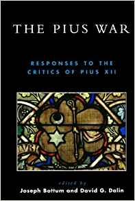

Olavo de Carvalho
Documenta que Hitler dizia que cristianismo e nazismo eram incompatíveis e uns dos dois deveria morrer.
Ver também
- (Book) Hitler’s Table Talk His Private Conversations (1941-1944) (http://aryanism.net/downloads/books/adolf-hitler/table-talk.pdf)
- (Book) Hitler’s Table Talk His Private Conversations (1941-1944) (https://archive.org/details/HitlerTableTalk)
- (Book Reading) Hitler's Table Talk - October 13, 1941. Relaxation, Writing, Organization, Architecture Books (https://www.youtube.com/watch?v=cfNTyxhaf-M)
- (Book Reading) Hitler's Table Talk - October 15, 1941. National Socialism, Frederick the Great, Monetary Theory (https://www.youtube.com/watch?v=lLusE-f4uBM)
- (Book Reading) Hitler's Table Talk - October 21, 1941. Christianity, Julian the Apostate, Marxism. (https://www.youtube.com/watch?v=p1OKq6nLj3Q)
- (Book Reading) Hitler's Table Talk - November 5, 1941. Vegetarianism, Germanic Race, Sparta, Jewish Lies (https://www.youtube.com/watch?v=EDf9Ekq5dIQ)
- (Book Reading) Hitler's Table Talk - November 11, 1941. The Church, Cathedral Architecture, Roosevelt (https://www.youtube.com/watch?v=-Zgwd4WT07c)
Mais livros

The Pius War: Responses to the Critics of Pius XII
David G. Dalin, Joseph Bottum

The Pope's Jews
Gordon Thomas

David G. Dalin